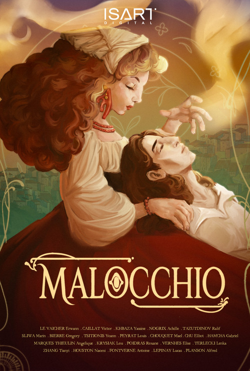
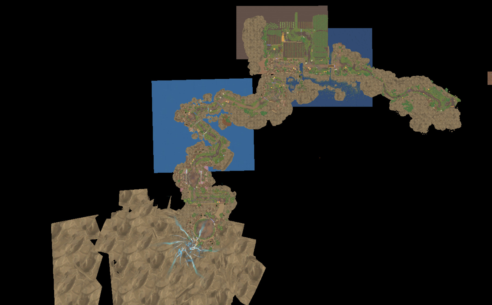
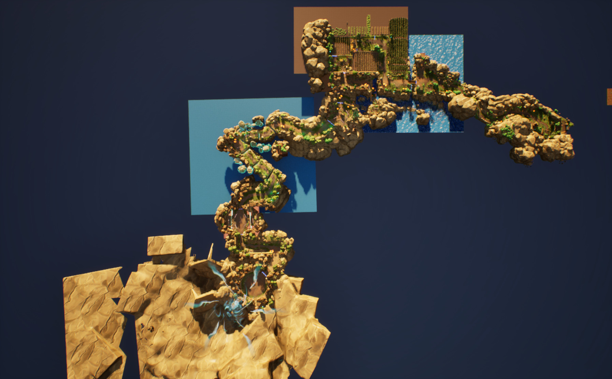
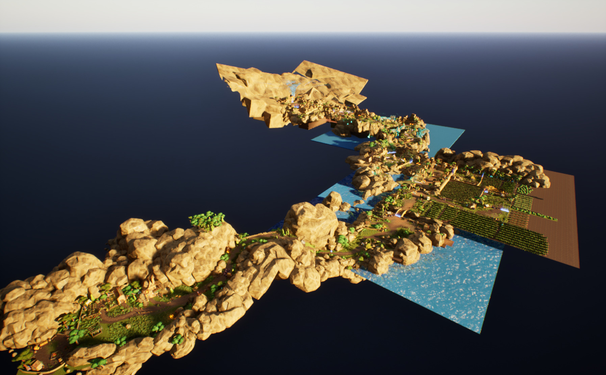
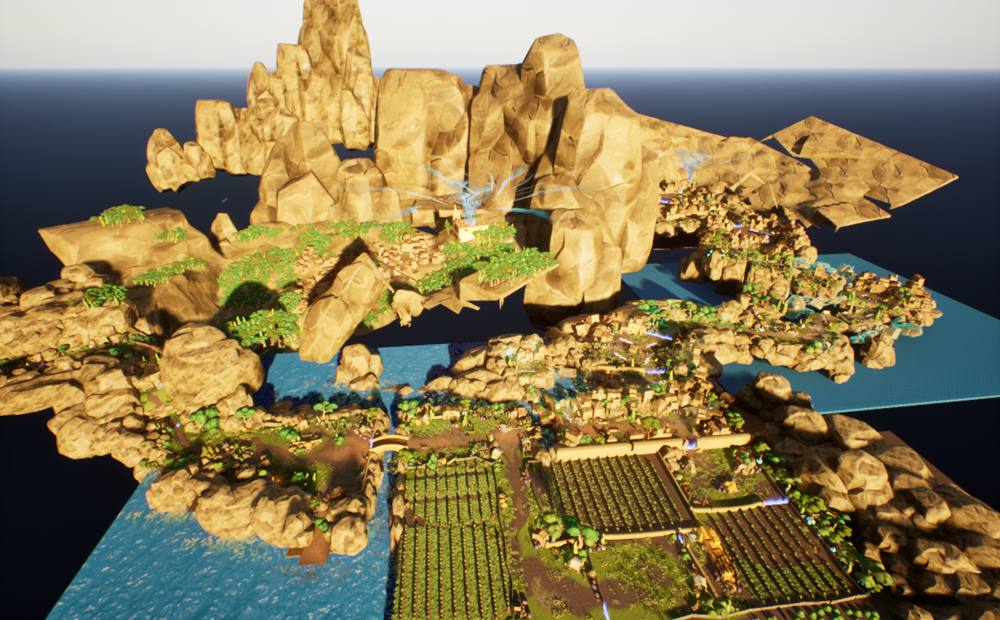
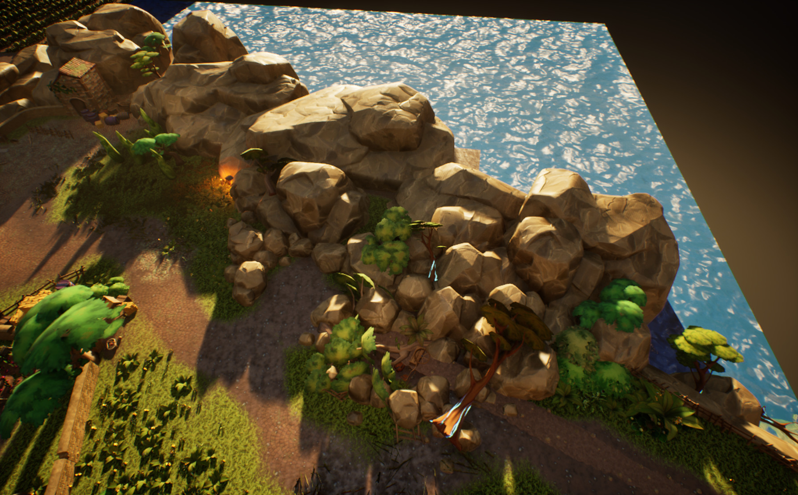
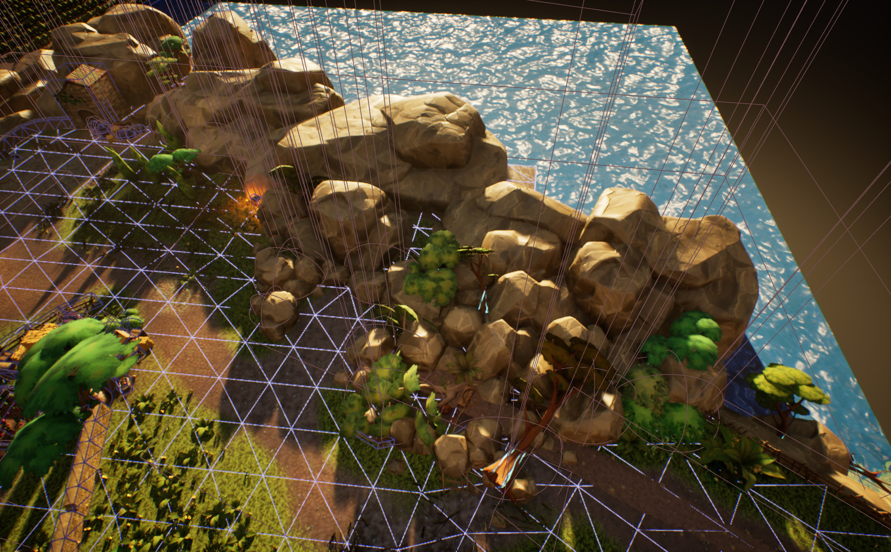
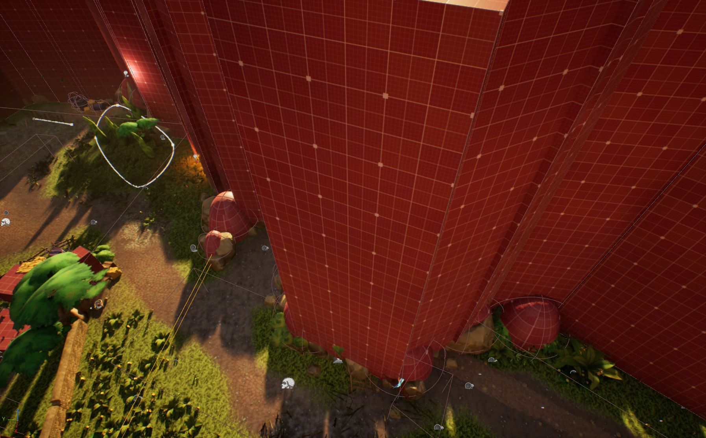
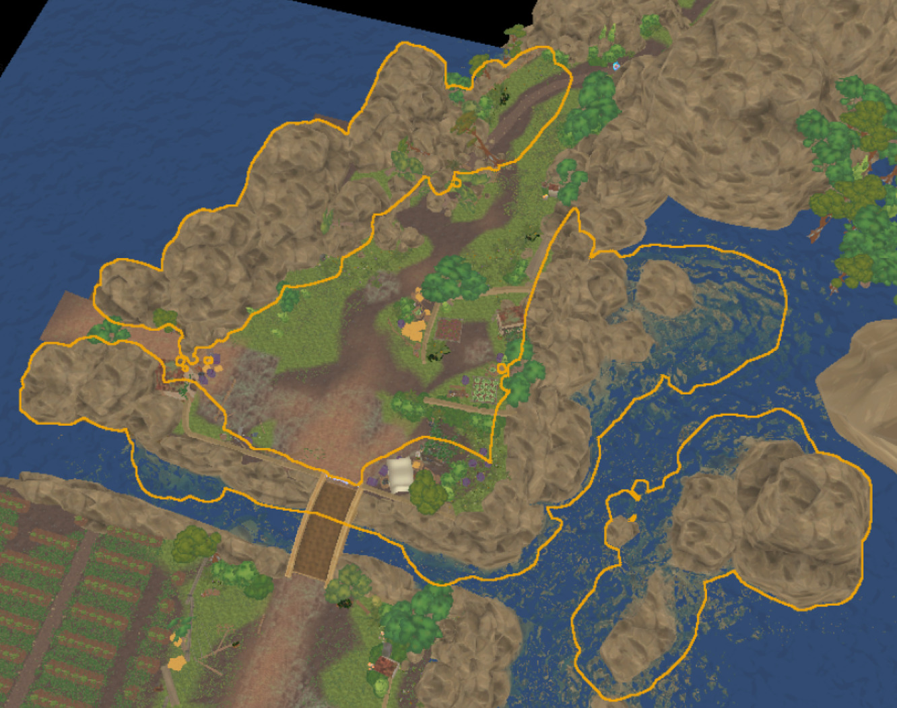

Malocchio
Group school project | May - June 2026 (~2m)

Key Points
> Team size: 20+ | Unreal Engine 5.6 | C++ & Blueprints
> Combat game with narrative elements where you play as a outcasted witch that needs to save its village in old Italy.
> My responsibilities:
- Core game design
- Level design
- Level organisation and optimization
About
This project was a group project at Isart Digital (Paris), we had many constraints such as making a short adventure game in Italy with a top down camera. We worked with Unreal Engine 5.6 and used Perforce as our Version Control System. In this project we were 6 Game Designers, 4 Game Designers & Programmers, 9 Game Artists, 3 Game Programmers and 2 Sound Designers.
Level Design, World Building and Optimization
As a tech GD I was responsible for the organization of the game level. My tasks were mainly authoring and verifying regularly that the actors were placed in the correct folders and sublevels.
Various angles of our final level with day lighting




For a clearer vision and obviously optimization reasons we decided to use sublevels in our game level to only load relevant parts of the level depending on the camera of the player.
Since sublevels were added mid-production, we decided to keep important and core actors such as floors, checkpoints, nav bounds volumes and combat related actors (spawn points, arenas, ...) always loaded on the persistent level.
This isn't ideal for a big project but was fine in our case since this would avoid extra costs for the developers while keeping our frame budget.
We also coupled level streaming with OFPA (One File Per Actor, also known as External Actors) to speed up drastically level design and world building in our team, since with this feature multiple users can work on a same level (or sublevel).
Our nav mesh was static with dynamic modifier areas to avoid unnecessary nav recalculations with level streaming, we also tweaked the level streaming actor and component registration settings to time slice as much as we could those process for stable fps.
We also did a lot of work to optimize the physics scene, such as enabling async physic body creation, using simple collisions if necessary or completely disabling collisions for purely visual actors.
Instead of having complex collisions being used we instead used invisible walls (boxes) and spheres (capsules) for the actual gameplay collisions.
Aside the performances gain this also made the artists work easier since they didn't had to take into account gameplay collisions while dressing up the level.
The collision optimizations were also handled by the game programmers, which also done other optimizations such as reducing the triangles count and texture sizes.
Example A: Game View

Example A: Game View with collisions

Example A: Editor View

As a final optimization when we were close to the end of the project, I converted all static meshes that were at a very high amount into Instanced Static Meshes to reduce the draw count.

Thanks for reading.